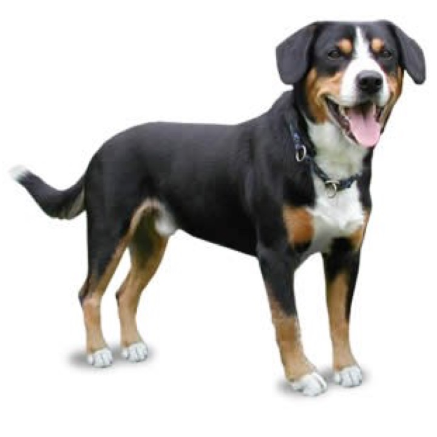

<!DOCTYPE html>
<html>
    <head>
       <script src="jspsych-6.3.1/jspsych.js"></script> 
       <script src="jspsych-6.3.1/plugins/jspsych-html-button-response.js"></script>
	   <link rel="stylesheet" href="jspsych-6.3.1/css/catAct.css">
       <link rel="stylesheet" href="jspsych-6.3.1/css/jspsych.css">
    </head>
    <body></body>
    <script>
        var timeline = [];

        var image_trial = {
            type: 'html-button-response',
            stimulus: '<h1><b>These are my Pokemon buddies</b><style="text-align:center;" /h1><div class="row"><div class="column"></div><div class="column"></div><div class="column"></div></div>',
            choices: [''],
        }
        timeline.push(image_trial);

        jsPsych.init({
    timeline: timeline,
    on_finish: function(){jsPsych.data.displayData();}
  });

    </script>
</html>